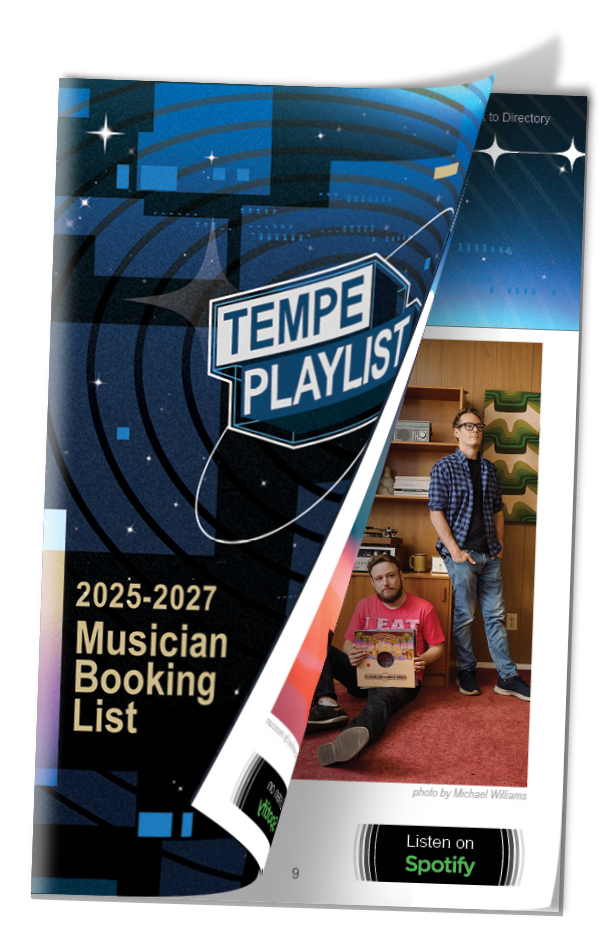
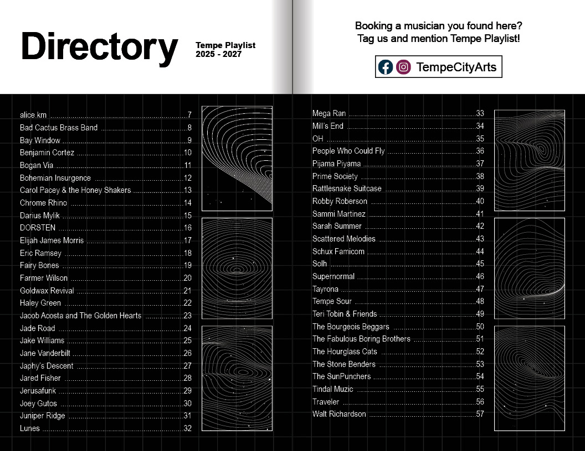
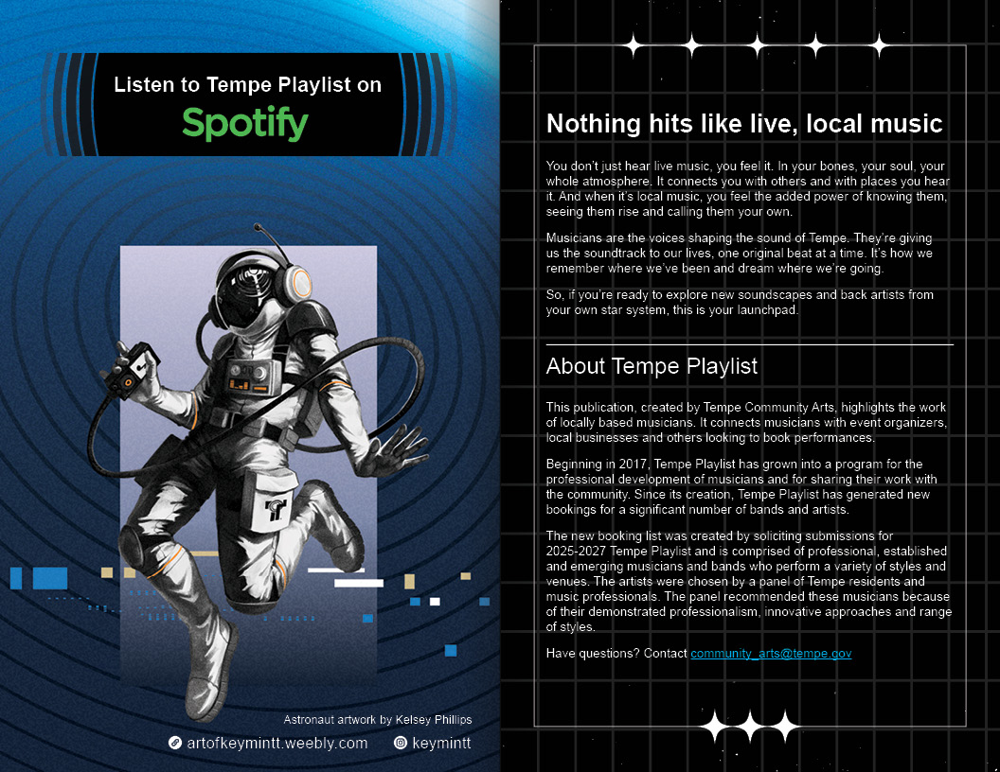
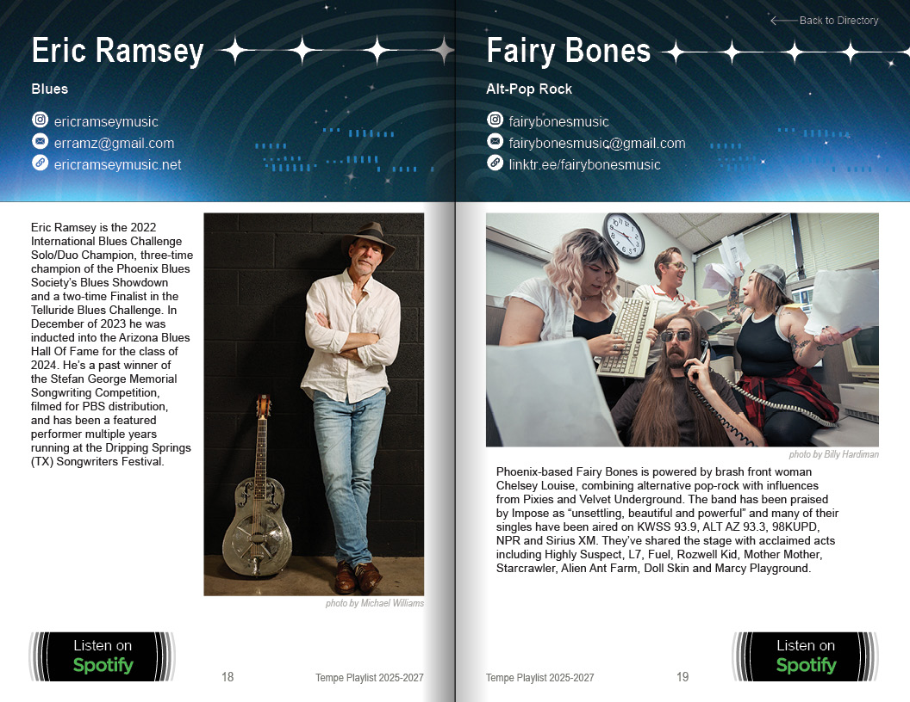
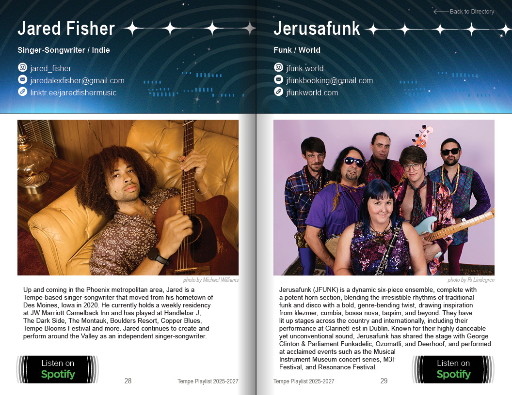

Tempe Playlist was created as a companion piece to Tempe Jam, so it needed to feel like part of the same universe. I wanted to create a directory that felt like an experience. It needed to be easy to navigate and consistent with the visual identity established for Tempe Jam.
To do this, I returned to the 1964 NASA Graphics Standards Manual that inspired the Tempe Jam campaign. I studied its typography, layouts and information hierarchy, then adapted those ideas into a system that could organize dozens of artist profiles.

My Solution
I imagined the guide as a transmission traveling through space. Each musician received a dedicated profile featuring professional photography provided through the City's artist support program, along with everything needed to book them.
My favorite feature is the Back to Directory button in the digital edition. Instead of endlessly scrolling to find another artist, readers can jump straight back to the directory with a single click.
WCAG 2.1 Compliance
I thought I was being clever with the mechanics in this design, but some of the choices I made created problems when I got to the accessibility stage.
For example, I'd built a custom icon font that swapped out plain bullet points for social media icons. It looked great visually, but screen readers had no idea what my new dingbat was supposed to mean. To meet WCAG accessibility standards, I added Actual Text overrides in the PDF export tagging so each icon announces its actual meaning, "Instagram" or "email," instead of "bullet character." The visual design stayed exactly as intended.




More From the Campaign